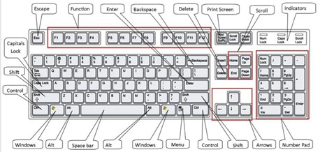

Caps Lock Key The caps lock key activates a feature that affects only the letter keys. Pressing on the caps lock button causes all letter keys to type in uppercase. All other keys will act the same as if caps lock is off. To deactivate caps lock, press the caps lock key again.
Shift Key The shift key is used in combination with a second key. The shift key is used primarily to capitalize letters. Shift differs from caps lock because you have to hold the shift key down while simultaneously pressing another key to capitalize a letter, where you only press the caps lock key once. Holding down the shift key also is used to type the characters and symbols above the numbers on the number keys.
Tab Key The tab key is used to move from one position on the screen to another. It also creates a “tab stop” (right 1/2 inch) indentation for your paragraphs. This is very similar to a typewriter.
Enter Key When working with text (words), pressing on the enter key moves the cursor down to the next line. Otherwise, pressing the enter key will activate anything that you have selected.

Escape Key The escape key is used to cancel the current operation or can be used to exit a program.
Space Bar Pressing the space bar while the cursor is positioned within text will cause a space (one character wide) to be placed at the position of the cursor (like on a typewriter)
Control Key The control key (Ctrl) is usually used with another key. Holding the control key in addition to another key or keys will start a function.
Alt Key The alternate key (Alt), similar to the control key, and is used in combination with other keys.
Arrow Keys The four arrow keys are located on several keys to the right of the spacebar at the bottom of the keyboard. Pressing one of these keys will cause some type of screen movement in the direction of the arrow on the key. These keys are frequently used when correcting mistakes in documents and allow users to “go back” and fix mistakes instead of erasing all of the work since the mistake was made. Backspace Key Pressing the backspace key while the cursor is positioned within text will delete the character (or space) immediately to the left of the cursor.
Delete Key Pressing the delete key while the cursor is positioned within text will delete the character (or space) immediately to the right of the cursor.